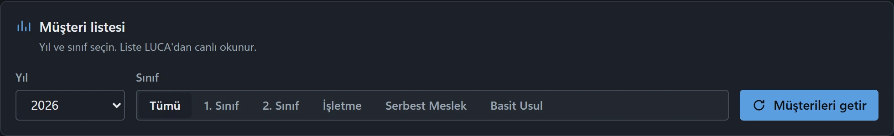
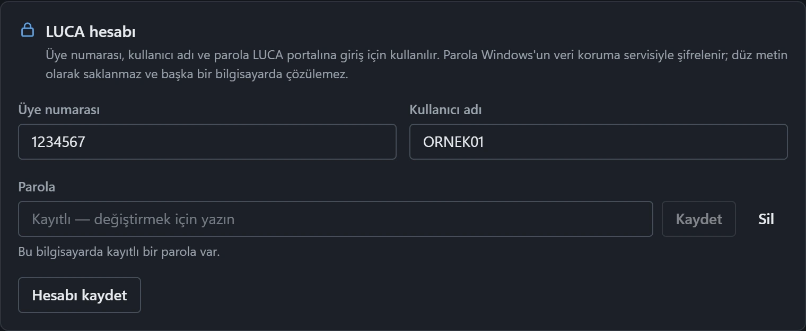
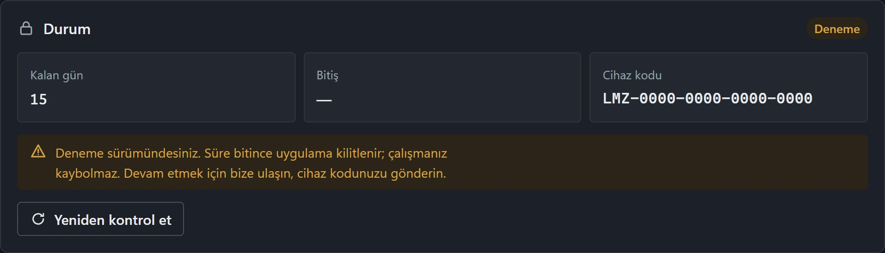

On iki kural,
tek tık.
LUCA'daki tüm müşterilerinizin mizan raporunu tek düğmeyle indirir, her birini 12 denetim kuralından geçirir. Elle saatler süren kontrol, dakikalara iner.
15 gün ücretsiz · Windows 10 / 11 · yönetici yetkisi gerekmez
Kurulum imzasız olduğu için Windows "bilinmeyen yayıncı" uyarısı gösterebilir: Ek bilgi → Yine de çalıştır.
İndirerek ve kurarak kullanım sözleşmesini kabul etmiş olursunuz. Lisans doğrulaması için işlenen veriler ve haklarınız: KVKK Aydınlatma Metni.
Üç adım, tek pencere.
Ayrı bir Excel şablonu, ayrı bir klasör düzeni yok. Uygulama LUCA'dan listeyi okur, raporları indirir, kuralları çalıştırır.
-
Getir
Yıl ve sınıfı seçin, müşteri listesi LUCA'dan canlı okunur. Üye numaranız ve kullanıcı adınız zaten kayıtlı.
20251. Sınıf148 müşteri20252. Sınıf—2025Basit Usul— -
İndir
Seçtiğiniz müşterilerin mizan raporu sırayla indirilir. Her rapor diskte, adlandırılmış hâlde durur.
Mizan2025-12146 / 148Mizan2025-11148 / 148Mizan2025-10sırada -
Denetle
Her mizan 12 kuraldan geçer. Hata, uyarı ve geçen satırlar tek tabloda; kuralı siz düzenlersiniz.
Kasaalacak bakiyehataSatıcılarborç bakiyegeçtiKDVbakiyegeçti
Ekranın tamamı sizin.
Koyu ve açık görünüm, tek pencere, kaydırılan üç kart. Mizanlar, ayarlar ve lisans aynı yerde.



Kurallar sizin.
12 varsayılan kontrol hazır gelir. Her birini düzenleyebilir, kapatabilir, limitli yenisini ekleyebilirsiniz.
Kural değişikliği bir sonraki denetimde geçerli olur.
- 100Kasa alacak bakiyeli olmamalıKasa hesabında alacak bakiyesi bulunmamalıdır.Hata
- 100Kasa borç bakiyesi limitiKasa borç bakiyesi 3.000.000 TL'yi aşmamalıdır.Hata
- 101Alınan çekler alacak bakiyeli olmamalıAlınan Çekler hesabında alacak bakiyesi bulunmamalıdır.Hata
- 103Verilen çekler borç bakiyeli olmamalıVerilen Çekler ve Ödeme Emirleri hesabında borç bakiyesi bulunmamalıdır.Hata
- 120Alıcılar alacak bakiyeli olmamalıAlıcılar hesabında alacak bakiyesi bulunmamalıdır.Hata
- 300Banka kredileri borç bakiyeli olmamalıBanka Kredileri hesabında borç bakiyesi bulunmamalıdır.Hata
- 320Satıcılar borç bakiyeli olmamalıSatıcılar hesabında borç bakiyesi bulunmamalıdır.Hata
- 360Ödenecek vergi ve fonlar borç bakiyeli olmamalıÖdenecek Vergi ve Fonlar hesabında borç bakiyesi bulunmamalıdır.Hata
- 361Ödenecek SGK kesintileri borç bakiyeli olmamalıÖdenecek Sosyal Güvenlik Kesintileri hesabında borç bakiyesi bulunmamalıdır.Hata
- 600Satış hesaplarında borç hareketi olmamalı600 ile başlayan hesaplarda dönem içi borç hareketi bulunmamalıdır.Hata
- 760Gider hesaplarında alacak hareketi olmamalı760, 770 ve 780 ile başlayan hesaplarda dönem içi alacak hareketi bulunmamalıdır.Uyarı
- 191KDV hesapları bakiyesiz olmalıİndirilecek KDV ve Hesaplanan KDV hesaplarında bakiye bulunmamalıdır.Hata
Şifreniz sizde kalır.
Uygulama LUCA'ya sizin bilgisayarınızdan, sizin oturumunuzla bağlanır. Parolanız hiçbir sunucuya gönderilmez.
-
Parola Windows kasasında
Parolanız DPAPI ile şifrelenip yalnızca bu bilgisayarda saklanır. Dosyayı başka bir makineye kopyalasanız da çözülmez.
-
Doğrulamayı siz girersiniz
SMS kodu ve güvenlik kodu her zaman elle girilir. Uygulama bu adımları otomatik geçmez, geçemez.
-
Lisans cihaza bağlı
Yetki cihaz kodunuza tanımlanır. Lisans anahtarı kopyalayıp başkasına vermek diye bir şey yok.
İlk 15 gün ücretsiz.
Kurduğunuz an deneme başlar; kod, anahtar, kayıt yok. Süre bitince cihaz kodunuzu iletirsiniz, süresiz tanımlanır.
-
Deneme
15 gün boyunca tüm özellikler açık. Mizan indirme, denetim, kural düzenleme — kısıtlama yok.
Windows 10 / 11 (64 bit) · yönetici yetkisi gerekmez · 41 MB
-
Süresiz
Deneme bitince uygulamayı açın, Lisans kartındaki cihaz kodunu bana iletin. Birkaç dakika içinde süresiz tanımlarım.
Fiyat ve ödeme için iletişime geçin.
Sık sorulanlar
Uygulama tam olarak ne yapıyor?
LUCA Mali Müşavir Paketi'ndeki müşteri listenizden seçtiğiniz yıl ve sınıfa göre tüm mizan raporlarını sırayla indirir, sonra her mizanı 12 denetim kuralından geçirir. Elle saatler süren işi dakikalara indirir.
Kurulum için yönetici yetkisi gerekir mi?
Hayır. Uygulama yalnızca sizin kullanıcı hesabınıza kurulur, yönetici onayı istemez. Kurulum dosyasını çalıştırıp ileri demeniz yeterli.
Deneme süresi nasıl işliyor?
İlk açılışta 15 günlük deneme başlar, hiçbir şey girmeniz gerekmez. Süre bitince uygulamayı satıcının panelden cihazınıza tanımlamasıyla süresiz kullanırsınız. Lisans anahtarı kopyalama ya da girme yok.
LUCA şifrem ve üyelik bilgilerim güvende mi?
Evet. Üye numaranız ve kullanıcı adınız kaydedilir, parolanız Windows'un kendi kasasında (DPAPI) şifreli tutulur; hiçbir yere gönderilmez. Giriş sırasında gereken SMS ve güvenlik kodunu siz girersiniz.
Kendi denetim kurallarımı ekleyebilir miyim?
Evet. 12 varsayılan kural hazır gelir; her birini düzenleyebilir, kapatabilir veya limit içeren yeni kurallar ekleyebilirsiniz. Kural değişiklikleri bir sonraki denetimde geçerli olur.
Hangi Windows sürümlerinde çalışır?
Windows 10 ve 11 (64 bit). Uygulama, LUCA'nın çalıştığı Edge tarayıcısını kullanır; ayrı bir tarayıcı kurmanız gerekmez.
İnternet bağlantısı şart mı?
Mizan indirme ve denetim için LUCA'ya bağlanmanız gerekir. Lisans denetimi de internet üzerinden yapılır; kısa süreli kesintilerde kayıtlı lisansınız çalışmaya devam eder.
Denetim sonuçları resmî bir görüş yerine geçer mi?
Hayır. Çıktılar bir kontrol listesidir; mali müşavirlik görüşü, tasdik veya beyan değildir. Raporu müşterinize ya da idareye iletmeden önce teyit etmek, düzeltmeleri yapmak ve beyan yükümlülüğünü yerine getirmek size aittir. Ayrıntılar için kullanım sözleşmesine bakabilirsiniz.
Güncellemeler nasıl geliyor?
Yeni sürüm çıktığında uygulama sizi haberdar eder. Tek tıkla indirip kurulumu yeniden çalıştırmanız yeterli; ayarlarınız, kayıtlarınız ve lisansınız korunur.
Deneyin, sonra konuşuruz.
Kurulum ücretsiz. Sorunuz olursa doğrudan bana yazın — arada satış katmanı yok.